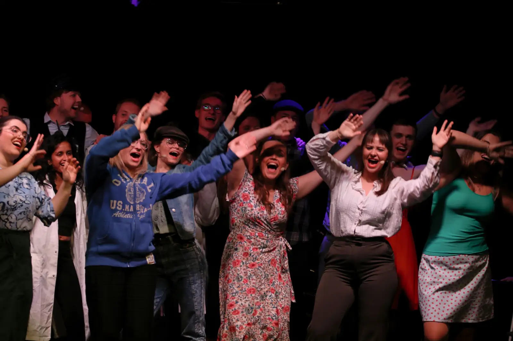

Bliv medlem
Tilmeld dig
Vi leder hele tiden efter nye medlemmer. Du kan tilmelde dig via NemTilmeld, og hvis du har spørgsmål, kan du skrive til os eller kontakte os på Facebook
Gå til NemTilmeldHar du spørgsmål?

Godt at vide
Skal jeg have erfaring?
Nej. Du kan komme ind med meget, lidt eller ingen erfaring. Det kræver ikke noget at være med. Skriv til os hvis du har spørgsmål.
Kan jeg være med, hvis jeg ikke læser på NAT?
Ja. Du er velkommen, uanset hvilket fakultet du læser på. Omkring en fjerdel af medlemmerne plejer at komme fra andre fakulteter, fra TEK og SAMF til HUM.
Hvad koster det?
Lige nu er det gratis at være medlem. Tidligere har et medlemskab kostet omkring 35 kr., per. sæson, så prisen kan ændre sig.
Hvad kan jeg lave?
Du kan stå på scenen, spille i bandet, skrive sketches, instruere, hjælpe backstage eller lave scenografi og kostumer. Se rollerne.
Hvor meget tid tager det?
Det meste er frivilligt. Gennem året er der øvearrangementer og masser af sociale arrangementer:
- Pubcrawl
- Sketchskrivning
- Fester
- Hyttetur
- Jamaftener
- Sommerhygge
- Brætspil
- Vægklatring
- Bodegahygge
- Juleafslutning
- Efterfest
- og meget mere
Op til forestillingen den første weekend i oktober er der intensuge, hvor man bruger meget tid sammen. Se hele sæsonen i kalenderen.
Hvordan melder jeg mig ind?
Tilmeld dig via NemTilmeld øverst på siden. Har du spørgsmål først, så skriv til natrevy@org.sdu.dk eller til os på Facebook.